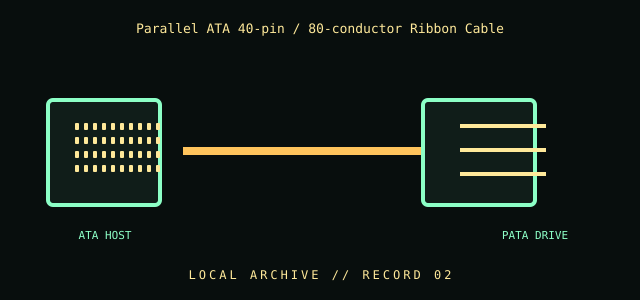

[ INDIVIDUAL COMPONENT // CABLES & ADAPTERS ]
Parallel ATA 40-pin / 80-conductor Ribbon Cable
Internal legacy ATA/ATAPI drive cable used between a parallel ATA host connector and compatible drives. The 80-conductor form retains 40-pin connectors and adds interleaved ground conductors for higher signaling integrity.

IDENTIFICATION / SAFETY: Match the complete part number, connector direction, host requirements, and revision to manufacturer documentation. A matching connector shape is not proof of protocol or electrical compatibility.
Specifications
| Catalog subcategory | Data, peripheral, and high-speed cables |
|---|---|
| Catalog identity | Parallel ATA (PATA/ATA) 40-position, 80-conductor ribbon cable |
| Protocol / standard | 40-pin IDC connector positions on an 80-conductor ribbon assembly; parallel ATA/ATAPI interface. Cable conductor count is not a data-rate guarantee: the host, device, mode, cable condition, and installation all matter. |
| Connector ends | ATA HOST → PATA DRIVE; direction and gender are specified where the manufacturer source verifies them. |
Compatibility & electrical hazards
For PATA/ATAPI devices and controllers only. Do not confuse the 40-pin connector with a 40-conductor cable or a SATA connector. Observe keyed orientation and motherboard/drive documentation; do not force an offset or reversed connector. Device selection and cable-position conventions vary by host and assembly, so do not infer master/slave or pin assignments from jacket color alone.
Archival & handling notes
Preserve the cable flat and uncreased, photograph any blue/gray/black connector coding and labels, and note the exact host/drive context. Inspect IDC contacts and strain relief; avoid sharp folding or pulling on the ribbon.
For collection records, photograph both connector faces and all labels; record manufacturer, complete SKU, revision, provenance, condition, and the source document used for identification. Do not apply power to an unidentified or damaged cable.
Sources & further reading
- INCITS T13 — ATA/ATAPI standards archiveStandards committee source for ATA/ATAPI interface revisions and document archive.
Source values are limited to the linked manufacturer or standards documentation. Features not stated there are intentionally left unspecified; confirm the exact cable revision and host-device manuals before use.